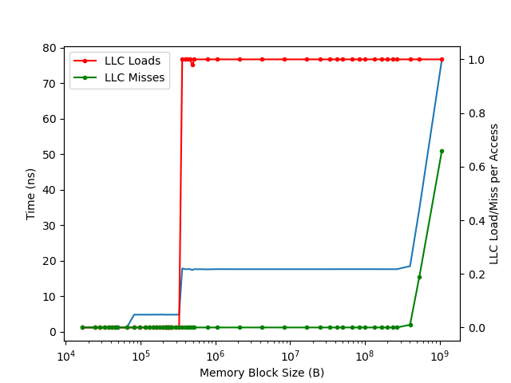

组装一台采用龙芯 3A6000 CPU 的主机¶
背景¶
最近买到了龙芯 3A6000 以及配套主板，在此记录我组装台式机的过程，以及在其上的体验。
购买¶
组装的第一步是购买各个配件，我买了如下的配件：
- 主板 + CPU：Loongson-3A6000-7A2000-1w-V0.1-EVB（LS3A6000-7A2000-1w-EVB-V1.21，XA612A0_V1.1），暂未正式上市
- 内存：Kingston HyperX HX426C16FB3/8 8GB，169 元
- 显卡：AMD RADEON RX550 4G 379 元
- 无线网卡：Intel AX200 79 元
- 硬盘：致态 TiPlus5000 Gen3 1TB，369 元
- 机箱：爱国者 A15 ATX，100 元
- 电源：爱国者 DK 系列 500W，149 元
除了主板和 CPU 以外总价一千出头。目前主板和 CPU 还没有正式上市，按照 3A5000 现在的价格的估计的话大概也是一千多，加起来整机不到三千。当然了，现在 3A6000 才刚出来，所以我买的价格也比较高，但自己组装也能省下来不少钱。 3A6000 已经正式上市。
实际上这里电源买的偏大了，不过 400W 和 500W 也只差 20 块钱，就愉快地加价了。
内存兼容性¶
我测试的内存条：
- Kingston HyperX HX426C16FB3/8(KHX2666C16/8G) 8GB DDR4-2666(PnP) 1Rx8：支持，能达到 2600 MT/s
- Kingston HyperX KF432C16BB/8(KF3200C16D4/8GX) 8GB DDR4-2400(JEDEC) 1Rx8：支持，能达到 2400 MT/s
- 金百达（KingBank）银爵 长鑫颗粒 DDR4 3200MHz（实际是 MT/s，JEDEC 2666）16GB U-DIMM 1.35V CL 16：
不支持固件 V4.0.05634 支持，能达到 2600 MT/s - 紫光 SCC16GP02H1F1C-26V 16GB 2666 ECC：不支持
- 紫光 SCC32GP12H1F1C-26V 32GB 2666 ECC: 不支持
关于 2600 MT/s vs 2666 MT/s 的问题：从 Memory PLL 来看，是 100 MHz 的频率通过 PLL 得到 1300 MHz，确实是 2600 MT/s，不过当成 2666 来用也是一样的。
网友表示在 3A6000 上可以工作的内存型号：
- 三星 M393A4G43AB3-CWEGY 32GB 2Rx8 PC4-3200AA-RE3-12-R80 RDIMM
- 紫光 SCC16GU03H2F1C-32AA 16GB 1Rx8 PC4-3200U-22-22-22
- 紫光 SCE08GU04APA-32 8GB 1Rx16 PC4-3200U-22-22-22
- 紫光 SCE16GU03BPB-32 16GB 1Rx8 PC4-3200U-22-22-22
网友表示在 3A5000 上可以工作的内存型号：
- 紫光 SCC08GU03H3F1C-32AA 8G UDIMM PC4-3200
- 紫光 SCC16GU03H4F1C-32AA 16G UDIMM PC4-3200
注：兼容性随 UEFI 固件版本和硬件版本不同可能不同，因此读者遇到不同的兼容性情况也是可能的。我目前使用的 UEFI 固件版本是 Loongson-UDK2018-V4.0.05420-stable202302。
显卡兼容性¶
我测试的显卡：
- AMD RX550：可用
- AMD RX6400：
不可用，见不到 BIOS 界面更新固件并关闭 GPU Emulation 后，在 BIOS 不可用，但是可以进 Linux 以后用
在我这里主板上的 HDMI 不工作，只有独显 AMD RX550 的 HDMI 可以工作，不确定是否和 4K 显示器有关。另外有网友表示主板上的 VGA 可以工作。固件版本是 Loongson-UDK2018-V4.0.05420-stable202302。
UPDATE：更新固件到 Loongson-UDK2018-V4.0.05494-stable202305 以后，主板上的 HDMI 也工作了：具体地讲，是在 VGA 下方的 HDMI。
UPDATE：更新固件到 UDK2018-3A6000-7A2000_EVB_V4.0.05634_prestable2311dbg.fd 以后，关闭 GPU Emulation 选项，AMD RX6400 也可用了，只不过在固件的时候，还是会输出到主板上的 HDMI，见 3A6000: Add EVB_XA61200 Board Support。
备注：已知的固件版本：
- V4.0.05420-stable202302：预装版本
- V4.0.05494-stable202305：修复了主板上的 HDMI 的问题，修复了 ACPI PPTT 表
- V4.0.05569-stable202308：见于 gitea whlug
- V4.0.05634-stable202308：添加 GPU Emu Disable 选项以解决 AMD RX6400 的问题
Linux 发行版¶
目前查到的支持 LoongArch 的发行版有：
- AOSC OS: 有 LiveCD，但是还没有 DeployKit，可以用解压 base tarball 的方法安装
- LoongArchLinux：有安装 CD，可用
- Gentoo：没有安装 CD，需要借别的发行版的环境来安装
- Debian：没有官方安装 CD，有第三方的安装 CD
- UOS：没试过
- openEuler：没试过
- Loongnix：没试过
- Anolis OS：没试过
既然买的盘比较大，就预留了多个系统分区的空间，然后保留一个大的数据分区。目前装了 AOSC OS、LoongArchLinux、Debian、Gentoo 和 NixOS。
目前 Debian 还缺很多包，但是可以手动 bootstrap 起来。我目前用的是 AOSC OS 的 Kernel，其余的部分是在 Debian 中从源码开始编译。中间会遇到各种循环依赖，需要通过 DEB_BUILD_PROFILES 来打破循环，很多包需要手动处理，先把一些难处理的包去掉，然后之后再重新打包。
UPDATE: 现在已经有很多包可以用了。Revy 指出可以用 debootstrap 生成一个 rootfs：
debootstrap --no-check-gpg --arch=loong64 --variant=buildd --foreign --include=ca-certificates,apt-transport-https,debian-ports-archive-keyring --extra-suites=unreleased unstable sid-loong64-sbuild http://mirror.sjtu.edu.cn/debian-ports
arch-chroot sid-loong64-sbuild
/debootstrap/debootstrap --second-stage
apt -f install
Gentoo 的话，按照官方的安装方法，只不过用 loongarch 的 stage3 tarball。目前遇到了一个小坑，就是 linux stable 6.4 内核遇到最新的 binutils 会有问题，表现是 Unsupport relocation type 65, please add its support(R_LARCH_B21)，这是因为缺了编译参数，导致 binutils 生成了 Linux 内核不支持的 relocation type。问题已经在 6.5 解决（commit）。可以用 sys-kernel/git-sources 来使用最新的 rc。
UPDATE: Linux 6.5 正式版出了，直接装 6.5 即可。
NixOS 的话，可以先在 x86 上生成一个 bootstrap tarball，然后在 LoongArch64 上用这个 bootstrap tarball，见 Add loongarch64 bootstrap tarball。需要一些手动操作，但 bootstrap tarball 配好了以后，就可以正常用 nixpkgs 装东西了。如果要生成 NixOS 的安装镜像，可以用 nixos-generator：
git clone git@github.com:nix-community/nixos-generators
./nixos-generators/nixos-generate -I nixpkgs=/path/to/nixpkgs -f install-iso --system loongarch64-linux
如果想要进一步缩短 ISO 构建时间，可以修改 nixos-generators/formats/install-iso.nix，把 installation-cd-base 改成 installation-cd-minimal。也可以直接在已有的系统上装新的 NixOS：
这里面还有很多小的 trick，需要对 nixpkgs 做一些修改：https://github.com/jiegec/nixpkgs/commits/loongarch64。
VSCode¶
VSCode 官方大概率是不会出 loongarch 版本的，但是自己可以编译一个。目前运行 VSCode 的主要障碍是 Electron。Electron 的上游化还在进行，但现在也有一些打了 patch 的 Electron 可用，例如 LoongArchLinux 的源里提供了 electron22 和 electron17-bin。LoongArchLinux 的源里也提供了一个比较老的 vscode 1.67.0 版本（对应的 PKGBUILD）。有群友已经用 electron22 把 vscode 1.84.2 跑起来了：LiarOnce/vscodium-electron-loong64。
Chrome 的情况和 VSCode 类似，核心其实都是 Chromium 内核的移植。LoongArchLinux 的源里也提供了一份 Chromium 102.0.5005.63。Firefox 则已经能比较容易地跑起来。
VSCode Remote¶
VSCode Remote Server 是闭源的（注：这里的表述可能不准确，有群友反馈可以在 LoongArch 上编译开源版本），但是理论上可以用 lat 来对 nodejs 做二进制翻译。只需要魔改 ~/.vscode/extensions/ms-vscode-remote.remote-ssh-0.102.0/out/extension.js（版本号可能不同），把里面对 x86_64 架构的判断，加上 loongarch64，也就是把 loongarch64 当成 x86_64 去处理，那么 VSCode Remote 就会下载 x86_64 的 binary 并运行，此时用 lat 就可以跑 server 了。
按照这个方法实践了一下：QEMU 还没支持 LASX 指令（有 patch 但是还没有合并），所以跑的时候会 SIGILL。真机 3A6000 上会在 lat 里面失败，因为我用的是新世界发行版，和旧世界发行版的 syscall 不兼容。或许用旧世界发行版可以用 lat 正常运行。
UPDATE: 使用 LoongArchLinux 的新世界 lat 1.3.1，VSCode Remote Server 可以工作，但还有 BUG。
UPDATE: 使用 LoongArchLinux 的新世界 lat 1.4.3，VSCode Remote Server 可以正常工作，没有了之前的 BUG。
也尝试了用 qemu user 去运行 x86 的 nodejs，但是遇到了 page size 不匹配的问题：16KB != 4KB，也没跑起来。
另一个曲线救国的方法是，修改 extension.js 让 VSCode 认为是 AArch64，然后用 qemu-user 来跑。这次没有遇到 page size 的问题了：
sudo apt install qemu-aarch64-static
wget https://repo.aosc.io/debs/pool/stable/main/g/gcc-runtime_12.2.0-0_arm64.deb
wget https://repo.aosc.io/debs/pool/stable/main/g/glibc_2.36-4_arm64.deb
dpkg --extract gcc-runtime_12.2.0-0_arm64.deb /path/to/prefix
dpkg --extract glibc_2.36-4_arm64.deb /path/to/prefix
# add to shell init
export QEMU_LD_PREFIX=/path/to/prefix
这样有个优势也是劣势，就是 Extension 也会认为 Remote 是 AArch64，那么就会跑自带的 AArch64 的程序，但如果有原生的 LoongArch64 程序，那还是用后者更好。一个例子是 rust-analyzer，可以指定 native binary：
这样只有 vscode server 本身是用 qemu-aarch64-static 跑的，其他则没有影响。
此外，code-server 也是可以用的，安装 node v16 和 npm，然后运行 code-server 安装脚本即可。
容器¶
可以 podman 跑其他架构的容器，例如：
sudo podman run --arch x86_64 -it --rm debian:stable
sudo podman run --arch arm64 -it --rm debian:stable
只要这个 image 有对应架构的版本，并且提前配好 binfmt，注意 binfmt 的 flags，建议设置为 POCF，其中比较重要的是 F，不然 binfmt 会在容器里找 binfmt 的 executable，自然就找不到了，会报错 exec container process (missing dynamic library?)。
docker 打上简单的 patch 以支持 loong64 以后，也可以正常运行：
Loong Arch Linux 上 XRDP 兼容性问题¶
在 Loong Arch Linux 上运行 XRDP，可能会遇到启动黑屏的问题。它的问题有两个：
/etc/xrdp/sesman.ini中，应该指定 Xorg 的完整路径，把param=Xorg改成param=/usr/lib/Xorg。这在 xrdp AUR 下面的讨论里可以看到。- 在
/usr/share/X11/xorg.conf.d中，如果有10-modeset.conf，它会导致 xrdp 启动的 Xorg 尝试打开 virtual console，但是因为不是 root 用户，所以会失败；即使按照上面的方法添加了-configdir /参数也没有用，因为/usr/share/X11/xorg.conf.d是全局的配置目录，不受-configdir选项影响。解决办法是把 10-modeset.conf 改名，或者挪到其他地方。但是要小心是否会影响本机 root 自己的 X11 服务启动。
其中 10-modeset.conf 的内容如下：
Section "Device"
Identifier "Generic Kernel Modesetting Device"
Driver "modesetting"
Option "kmsdev" "/dev/dri/card0"
Option "ShadowFB" "true"
EndSection
这个文件由 xorg-server 包安装：
$ pacman -F 10-modeset.conf
extra/xorg-server 21.1.8-3 (xorg) [installed]
usr/share/X11/xorg.conf.d/10-modeset.conf
是从 10-modeset.conf 安装而来。modesetting Driver 的文档见 MODESETTING(4)。设置这个应该是为了 7A2000 的 GPU：# fix modesetting driver for loongson and gsgpu，但是误伤了 xrdp。
Benchmark¶
推荐阅读：华为 VS 龙芯 国产 CPU 架构初步探测、对比与分析
AOSC¶
在 AOSC 上跑一些测试软件的测试结果（冒号后多个数字为跑多次的结果），不一定准确：
- p7zip
7z -mmt1 b17.04 输出最后一个值：3681 3678 3680 - p7zip
7z -mmt4 b17.04 输出最后一个值：13998 13995 14038 - p7zip
7z -mmt8 b17.04 输出最后一个值：20585 20816 20407 - Coremark v1.01 单线程（
make）: 21134 21164 21161 - Coremark v1.01 四线程（
make XCFLAGS="-DMULTITHREAD=4 -DUSE_PTHREAD"）：83571 83629 83565 - Coremark v1.01 八线程（
make XCFLAGS="-DMULTITHREAD=8 -DUSE_PTHREAD"）：113111 113143 113250
其中四线程的测试绑定到 0,2,4,6 核心。编译器不支持自动向量化，LSX/LASX 只有特定的汇编优化。
网友的评测¶
官方发布：https://mp.weixin.qq.com/s/Lm_6varu0ovntPGfVzeGLw
Microbenchmark¶
下面是我用 microbenchmark 方法测到的一些微架构数据，不一定准确：
3A6000:
- 主频：2500 MHz
- L1 缓存命中 Load To Use：1.2ns，3 周期
- L2 缓存命中 Load To Use：4.81ns，12 周期
- L3 缓存命中 Load To Use：17.63ns，44 周期
- add.w/d: 4 per cycle, 1 cycle latency
- mul.w/d: 2 per cycle, 4 cycle latency
- fadd.s/d: 4 per cycle, 3 cycle latency
- fmul.s/d: 2 per cycle, 5 cycle latency
- fmadd.s/d: 2 per cycle, 5 cycle latency
- crc.w.b.w: 2 per cycle, 1 cycle latency
- crc.w.h.w: 2 per cycle, 1 cycle latency
- crc.w.w.w: 2 per cycle, 1 cycle latency
- crc.w.d.w: 2 per cycle, 1 cycle latency
- xvadd/vadd.d: 4 per cycle, 1 cycle latency
- xvmul/vmul.d: 2 per cycle, 4 cycle latency
- xvfadd/vfadd.d: 4 per cycle, 3 cycle latency
- xvfmul/vfmul.d: 2 per cycle, 5 cycle latency
- 双精度浮点性能：
- 单核标量：2500 * 2 * 2 = 10 GFLOPS
- 单核向量：2500 * 2 * 2 * 4 = 40 GFLOPS
- 全核向量：4 * 40 = 160 GFLOPS
访存延迟与工作集大小的关系（使用 jiegec/cpu-micro-benchmarks 测试）：

主要分三段：
- <64KB: 命中 L1D，Latency 是 1.2 ns，3 周期。64KB 与 L1D 容量 64 KB 一致。
- <320KB: 命中 L2，Latency 是 4.8 ns，12 周期。320KB 等于 L1D 容量 64 KB 与 L2 容量 256 KB 总和，而不像很多微架构那样等于 L2 容量。
- <256MB: 命中 L3，Latency 是 17.6 ns，44 周期。256MB 不等于 L3 容量 16 MB，和缓存替换策略或预取器行为有关。
3C5000:
- 主频：2200 MHz
- L1 缓存命中 Load To Use：1.82ns，4 周期
- L2 缓存命中 Load To Use：6.37ns，14 周期
- 指令吞吐/延迟：
- add.w/d: 4 per cycle, 1 cycle latency
- mul.w/d: 2 per cycle, 4 cycle latency
- fadd.s/d: 2 per cycle, 5 cycle latency
- fmul.s/d: 2 per cycle, 5 cycle latency
- fmadd.s/d: 2 per cycle, 5 cycle latency
- crc.w.b.w: 1/3.5 per cycle, 5 cycle latency
- crc.w.h.w: 1/4.5 per cycle, 7 cycle latency
- crc.w.w.w: 1/6.5 per cycle, 11 cycle latency
- crc.w.d.w: 1/10.5 per cycle, 19 cycle latency
- xvadd/vadd.d: 2 per cycle, 1 cycle latency
- xvmul/vmul.d: 2 per cycle, 4 cycle latency
- xvfadd/vfadd.d: 2 per cycle, 5 cycle latency
- xvfmul/vfmul.d: 2 per cycle, 5 cycle latency
对比：
| Inst latency & throughput | 3A6000 @ 2.5 GHz | 3C5000 @ 2.2 GHz | Kunpeng 920 @ 2.6 GHz |
|---|---|---|---|
| 64b int add | 4 per cyc, 1 cyc lat | 4 per cyc, 1 cyc lat | 3 per cyc, 1 cyc lat |
| 64b int mul | 2 per cyc, 4 cyc lat | 2 per cyc, 4 cyc lat | 1 per cyc, 4 cyc lat |
| 64b fp add | 4 per cyc, 3 cyc lat | 2 per cyc, 5 cyc lat | 2 per cyc, 4 cyc lat |
| 64b fp mul | 2 per cyc, 5 cyc lat | 2 per cyc, 5 cyc lat | 2 per cyc, 5 cyc lat |
| 128b vec 64b int add | 4 per cyc, 1 cyc lat | 2 per cyc, 1 cyc lat | 2 per cyc, 2 cyc lat |
| 128b vec 64b int mul | 2 per cyc, 4 cyc lat | 2 per cyc, 4 cyc lat | N/A |
| 128b vec 64b fp add | 4 per cyc, 3 cyc lat | 2 per cyc, 5 cyc lat | 1 per cyc, 4 cyc lat |
| 128b vec 64b fp mul | 2 per cyc, 5 cyc lat | 2 per cyc, 5 cyc lat | 1 per cyc, 5 cyc lat |
| 256b vec 64b int add | 4 per cyc, 1 cyc lat | 2 per cyc, 1 cyc lat | N/A |
| 256b vec 64b int mul | 2 per cyc, 4 cyc lat | 2 per cyc, 4 cyc lat | N/A |
| 256b vec 64b fp add | 4 per cyc, 3 cyc lat | 2 per cyc, 5 cyc lat | N/A |
| 256b vec 64b fp mul | 2 per cyc, 5 cyc lat | 2 per cyc, 5 cyc lat | N/A |
参考：
- https://www.7-cpu.com/cpu/Loongson_3A5000.html
- https://chipsandcheese.com/2023/04/09/loongsons-3a5000-chinas-best-shot/
- https://chipsandcheese.com/2023/02/26/loongsons-lsx-and-lasx-vector-extensions/
已知问题¶
除了前面所述的内存条和显卡兼容性以外，还有以下已知问题：
AMD 显卡关屏久了以后，可能会 hang，怀疑是电源管理问题升级 6.5 内核后问题消失固件的 PCIe Above 4G 功能不可用已在新版固件中修复固件的 ACPI PPTT 表内容有问题已在新版固件中修复板载 HDMI 有问题已在新版固件中修复